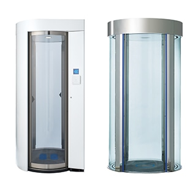
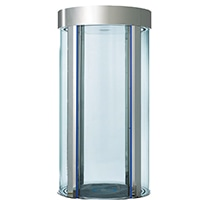
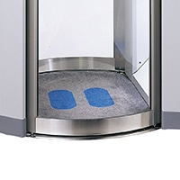

Device
Kumahira
サークルゲート／セキュリティゲート
最高レベルのセキュリティを実現するメカニズム
個人情報をはじめ、各種機密情報を取り扱うサーバールームや、電算室などの最重要エリアでは、「共連れ通行」や「すれ違い逆通行」といった不正通行の可能性を徹底的に排除する必要があります。サークルゲートは、最重要エリアで徹底した一人通行を実現するセキュリティゲートです。

- 屋内
- 最大6人／分（連続通行時）
- スライド扉タイプ
- インターロック制御
- ハイセキュリティ
商品の特長
不正な入室を防止するインターロック制御
入室側の扉と退室側の扉のどちらかは必ず閉扉状態となるインターロック制御により、共連れ通行・すれ違い逆通行を防止します。2006年グッドデザイン賞受賞製品です。

一人通行を実現する複数のセンサー
進入者の体の大きさを検知するエリアセンサー、ゲート中央に立っているかを判別するマットスイッチ、通行者の体重を測定する重量センサー（オプション）により、確実な一人通行を実現します。

庫内認証による本人確認
サークルゲート庫内でICカード認証や生体認証などの照合操作を実施することにより、許可された本人のみを確実に通行させることができます。
スペック一覧
| 本人照合端末 | 入退管理用の本人照合端末は別売品 |
|---|---|
| 通行方向 | 双方向通行可能 |
| 通行能力 | 最大6人／分 ※連続通行時（入退管理システムの性能に準拠） |
| 本体寸法 | 外寸法:W1,050×H2,222×D1,050mm 内寸法:W580×H2,000×φ982mm |
※弊社ウェブサイト、カタログに記載された製品および仕様は、製品の改良などのために、仕様・外観は予告なしに変更することがありますのでご了承ください。ご注文に際しましては、最新の製品仕様を弊社窓口までご確認くださいますようお願いいたします。